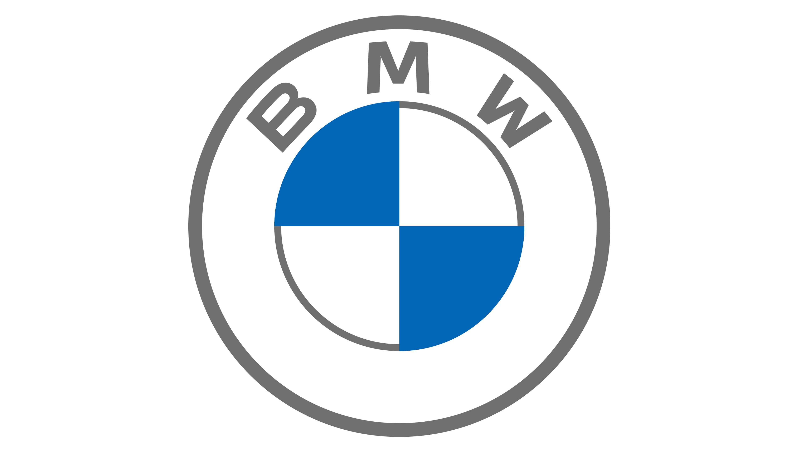

Свежие новости
Электрификация и Стремительный Рост Электромобилей
Автономные Технологии и Безопасность
Популярные марки авто

BMW — престижная марка автомобилей и мотоциклов, известная своими высокотехнологичными и производительными транспортными средствами. Основанная в 1916 году, компания BMW стала одним из лидеров в автомобильной индустрии.
Известные модели:
BMW 3 Series: Популярная серия седанов, предоставляющая баланс между комфортом и динамикой.
BMW 5 Series: Бизнес-класс, сочетающий в себе роскошь и выдающуюся производительность.
BMW 7 Series: Представительские седаны с передовыми технологиями и роскошным дизайном.
BMW X-серия: Внедорожники и кроссоверы, объединяющие производительность с комфортом.
Инновации:
BMW славится своим инновационным подходом к автомобильному производству. Они активно внедряют передовые технологии в области электрификации, автономного вождения и современных систем безопасности.
Спортивные Аспекты:
BMW также активно участвует в мировых автоспортивных соревнованиях. Благодаря своему участию в различных гоночных сериях, таких как DTM (Deutsche Tourenwagen Masters) и Le Mans, марка подчеркивает свою спортивную наследственность.
Прочие Дивизии:
Помимо автомобилей, BMW также производит мотоциклы под торговой маркой BMW Motorrad. Компания также является производителем высокопроизводительных двигателей и поставщиком услуг в области финансирования автомобилей.
BMW продолжает быть символом роскоши, инженерного мастерства и вождения с удовольствием, и оставляет свой след в истории автомобильной индустрии.
Известные модели:
Lada Vesta: Семейный седан с современным дизайном и доступной ценой.
Lada Granta: Экономичный автомобиль с надежной репутацией.
Lada Niva: Легендарный внедорожник, признанный своей проходимостью.
О Lada:
Lada — российская автомобильная марка, представляющая собой часть автопроизводителя AvtoVAZ. Созданная в 1970 году, Lada стала символом отечественного автопрома и широко распространена как в России, так и за её пределами.
Национальная Популярность:
Lada воплощает понятие доступности и надежности для многих российских водителей. Модели Lada заслужили признание благодаря простоте технического обслуживания и приспособленности к условиям сурового климата.
Эволюция Дизайна и Технологий:
С течением времени Lada активно совершенствовала свой дизайн и технологии, внедряя современные элементы в свои автомобили. Это помогло бренду привлечь новых покупателей и оставаться конкурентоспособным.
Экспорт:
Lada имеет значительное присутствие на мировом рынке, снабжая автомобили в различные страны, особенно в страны СНГ и восточной Европы.
Стратегия В будущем:
AvtoVAZ и Lada продолжают работать над улучшением своих моделей, внедрением новых технологий и укреплением позиций на рынке. Бренд остается важным элементом автомобильной истории России и представляет собой важное звено в развитии отечественной автомобильной индустрии.
Известные модели:
Audi A4: Популярный семейный седан с инновационными технологиями.
Audi Q5: Кроссовер с элегантным дизайном и высоким уровнем комфорта.
Audi R8: Суперкар с выдающейся производительностью и динамикой.
О Audi:
Audi — премиальная немецкая марка автомобилей, входящая в состав концерна Volkswagen Group. Бренд славится своим элегантным дизайном, передовыми технологиями и высочайшим уровнем исполнения.
Инновации и Технологии:
Audi является лидером в разработке передовых автомобильных технологий. Инновации включают в себя системы автопилота, цифровые приборные панели Virtual Cockpit, эффективные двигатели с турбонаддувом и системы безопасности нового поколения.
Динамичный Дизайн:
Автомобили Audi отличаются стильным и узнаваемым дизайном. Каждая модель сочетает в себе эстетику, функциональность и динамичные линии, что делает их привлекательными для ценителей автомобильного искусства.
Performance и Quattro:
Audi знаменита своими высокопроизводительными моделями, такими как линейка S и RS, а также технологией полного привода Quattro, обеспечивающей уверенное вождение в различных условиях.
Устойчивость и Экология:
Бренд активно работает над улучшением эффективности топливопотребления и внедрением электрификации. Модели e-tron представляют собой шаг в направлении устойчивой мобильности.
Спортивные Достижения:
Audi принимает активное участие в мировых автоспортивных мероприятиях, включая участие в 24-часовой гонке Ле-Ман.
Audi остается символом роскоши, инноваций и внимания к деталям в мире автомобилей, оставляя свой след в истории немецкой и мировой автомобильной промышленности.
Известные модели:
Mazda3: Стильный компактный автомобиль с эффективными технологиями.
Mazda CX-5: Популярный кроссовер с элегантным дизайном.
Mazda MX-5 Miata: Иконичный родстер, признанный за свою спортивность и динамичность.
О Mazda:
Mazda — японская автомобильная марка, известная своим уникальным стилем, технологическими инновациями и стремлением к драйву. Бренд является независимым автопроизводителем, придерживаясь философии, которую они называют "Jinba Ittai" — взаимодействие между водителем и автомобилем.
Skyactiv Технологии:
Mazda внедряет Skyactiv, свой подход к созданию более эффективных и производительных автомобилей. Эти технологии охватывают двигатели, трансмиссии, шасси и кузов, стремясь к оптимальному взаимодействию между всеми компонентами.
Дизайн Kodo:
Мазда славится своим дизайном под названием Kodo, что означает "Душа движения". Этот дизайн выражает энергию и динамичность, делая каждую модель Mazda узнаваемой и привлекательной.
Спортивность и Динамика:
Бренд уделяет особое внимание вождению как удовольствию. Используя технологии Skyactiv, Mazda создает автомобили, которые сочетают в себе эффективность и удовольствие от вождения.
Электрификация:
Mazda активно исследует область электрификации и внедряет технологии, такие как мягкая гибридизация, чтобы повысить эффективность своих автомобилей.
Глобальное Воздействие:
Mazda успешно продвигается на мировых рынках, предлагая автомобили, которые сочетают в себе надежность, стиль и инновации.
Mazda продолжает вдохновлять автолюбителей своим подходом к дизайну и вождению, утверждая свою уникальность в мире автомобилей.
BMW — престижная марка автомобилей и мотоциклов, известная своими высокотехнологичными и производительными транспортными средствами. Основанная в 1916 году, компания BMW стала одним из лидеров в автомобильной индустрии. Известные модели: BMW 3 Series: Популярная серия седанов, предоставляющая баланс между комфортом и динамикой. BMW 5 Series: Бизнес-класс, сочетающий в себе роскошь и выдающуюся производительность. BMW 7 Series: Представительские седаны с передовыми технологиями и роскошным дизайном. BMW X-серия: Внедорожники и кроссоверы, объединяющие производительность с комфортом. Инновации: BMW славится своим инновационным подходом к автомобильному производству. Они активно внедряют передовые технологии в области электрификации, автономного вождения и современных систем безопасности. Спортивные Аспекты: BMW также активно участвует в мировых автоспортивных соревнованиях. Благодаря своему участию в различных гоночных сериях, таких как DTM (Deutsche Tourenwagen Masters) и Le Mans, марка подчеркивает свою спортивную наследственность. Прочие Дивизии: Помимо автомобилей, BMW также производит мотоциклы под торговой маркой BMW Motorrad. Компания также является производителем высокопроизводительных двигателей и поставщиком услуг в области финансирования автомобилей. BMW продолжает быть символом роскоши, инженерного мастерства и вождения с удовольствием, и оставляет свой след в истории автомобильной индустрии.
Известные модели: Lada Vesta: Семейный седан с современным дизайном и доступной ценой. Lada Granta: Экономичный автомобиль с надежной репутацией. Lada Niva: Легендарный внедорожник, признанный своей проходимостью. О Lada: Lada — российская автомобильная марка, представляющая собой часть автопроизводителя AvtoVAZ. Созданная в 1970 году, Lada стала символом отечественного автопрома и широко распространена как в России, так и за её пределами. Национальная Популярность: Lada воплощает понятие доступности и надежности для многих российских водителей. Модели Lada заслужили признание благодаря простоте технического обслуживания и приспособленности к условиям сурового климата. Эволюция Дизайна и Технологий: С течением времени Lada активно совершенствовала свой дизайн и технологии, внедряя современные элементы в свои автомобили. Это помогло бренду привлечь новых покупателей и оставаться конкурентоспособным. Экспорт: Lada имеет значительное присутствие на мировом рынке, снабжая автомобили в различные страны, особенно в страны СНГ и восточной Европы. Стратегия В будущем: AvtoVAZ и Lada продолжают работать над улучшением своих моделей, внедрением новых технологий и укреплением позиций на рынке. Бренд остается важным элементом автомобильной истории России и представляет собой важное звено в развитии отечественной автомобильной индустрии.
Известные модели: Audi A4: Популярный семейный седан с инновационными технологиями. Audi Q5: Кроссовер с элегантным дизайном и высоким уровнем комфорта. Audi R8: Суперкар с выдающейся производительностью и динамикой. О Audi: Audi — премиальная немецкая марка автомобилей, входящая в состав концерна Volkswagen Group. Бренд славится своим элегантным дизайном, передовыми технологиями и высочайшим уровнем исполнения. Инновации и Технологии: Audi является лидером в разработке передовых автомобильных технологий. Инновации включают в себя системы автопилота, цифровые приборные панели Virtual Cockpit, эффективные двигатели с турбонаддувом и системы безопасности нового поколения. Динамичный Дизайн: Автомобили Audi отличаются стильным и узнаваемым дизайном. Каждая модель сочетает в себе эстетику, функциональность и динамичные линии, что делает их привлекательными для ценителей автомобильного искусства. Performance и Quattro: Audi знаменита своими высокопроизводительными моделями, такими как линейка S и RS, а также технологией полного привода Quattro, обеспечивающей уверенное вождение в различных условиях. Устойчивость и Экология: Бренд активно работает над улучшением эффективности топливопотребления и внедрением электрификации. Модели e-tron представляют собой шаг в направлении устойчивой мобильности. Спортивные Достижения: Audi принимает активное участие в мировых автоспортивных мероприятиях, включая участие в 24-часовой гонке Ле-Ман. Audi остается символом роскоши, инноваций и внимания к деталям в мире автомобилей, оставляя свой след в истории немецкой и мировой автомобильной промышленности.
Известные модели: Mazda3: Стильный компактный автомобиль с эффективными технологиями. Mazda CX-5: Популярный кроссовер с элегантным дизайном. Mazda MX-5 Miata: Иконичный родстер, признанный за свою спортивность и динамичность. О Mazda: Mazda — японская автомобильная марка, известная своим уникальным стилем, технологическими инновациями и стремлением к драйву. Бренд является независимым автопроизводителем, придерживаясь философии, которую они называют "Jinba Ittai" — взаимодействие между водителем и автомобилем. Skyactiv Технологии: Mazda внедряет Skyactiv, свой подход к созданию более эффективных и производительных автомобилей. Эти технологии охватывают двигатели, трансмиссии, шасси и кузов, стремясь к оптимальному взаимодействию между всеми компонентами. Дизайн Kodo: Мазда славится своим дизайном под названием Kodo, что означает "Душа движения". Этот дизайн выражает энергию и динамичность, делая каждую модель Mazda узнаваемой и привлекательной. Спортивность и Динамика: Бренд уделяет особое внимание вождению как удовольствию. Используя технологии Skyactiv, Mazda создает автомобили, которые сочетают в себе эффективность и удовольствие от вождения. Электрификация: Mazda активно исследует область электрификации и внедряет технологии, такие как мягкая гибридизация, чтобы повысить эффективность своих автомобилей. Глобальное Воздействие: Mazda успешно продвигается на мировых рынках, предлагая автомобили, которые сочетают в себе надежность, стиль и инновации. Mazda продолжает вдохновлять автолюбителей своим подходом к дизайну и вождению, утверждая свою уникальность в мире автомобилей.